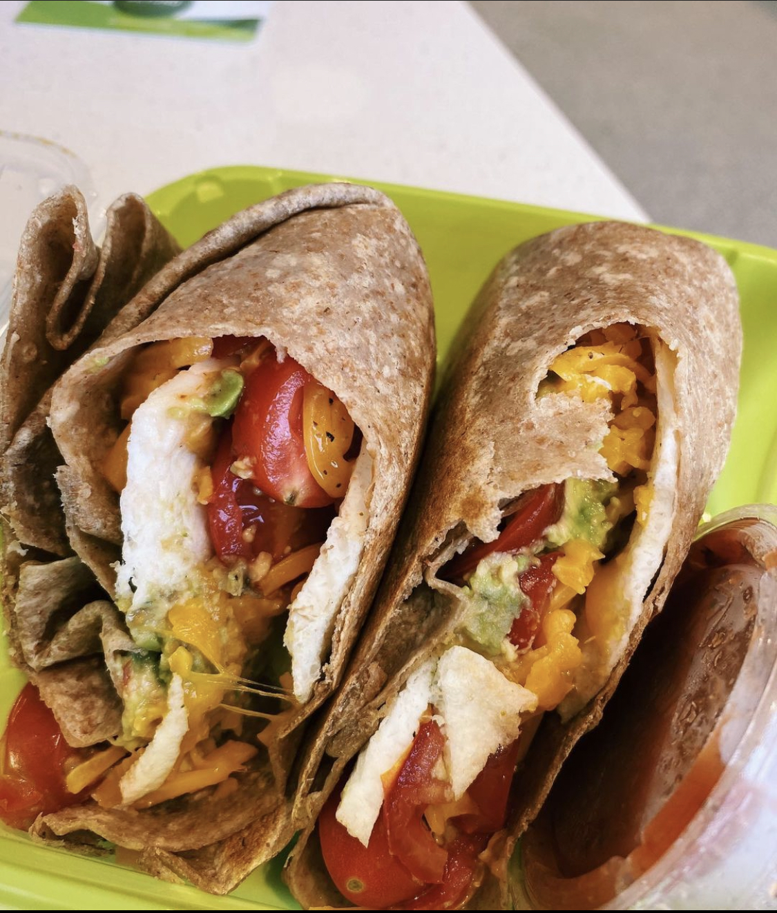

Blog
Post 1: Beyond Juice
Beyond Juice has opened its South U location, which is very close to University of Michigan central campus and several dorms and apartment buildings where students reside.
The chain has several additional locations across Michigan, including one on Washtenaw Ave in Ann Arbor. However, this new location is a game changer for Michigan students, who can now access Beyond Juice in walking distance. Whether it be grabbing meals between classes or study sessions or needing a quick healthy bite on the walk home, this location is key to Beyond Juice’s success. With the current state of the pandemic and remote classes, students spend more time in their residences than ever, making the location near Landmark, 611, Vic Village, University Towers, and several other dorm and off-campus housing establishments extra crucial.
Beyond Juice is healthy, affordable and delicious: a combination the existing and past South U area establishments have yet to master. Competitor Grabagreen, which is just around the corner, has not been popular among students because of high prices and unfavorable reviews of its food. Many students report that the food and smoothies are not very enjoyable and are overpriced, which has made it a struggle to survive. Revive, which is also around the corner on East University Ave, is very popular among students and well known for its delicious and healthy options. However, with salads pricing an average of $20, it is not accessible for most Michigan students.
Additionally, Beyond Juice has unparalleled convenience as a differentiator, with online ordering available on its mobile app and website as well as delivery apps like Uber Eats. This furthers convenience for student, making healthy and fast meals easier to order than ever before. Beyond Juice also offers deals like free smoothies with first online order, which has been a successful promotion among Michigan students. We personally enjoy the Prescott salad bowl, which includes lettuce, quinoa, tomatoes, cheddar cheese, onion, and cilantro lime dressing!
